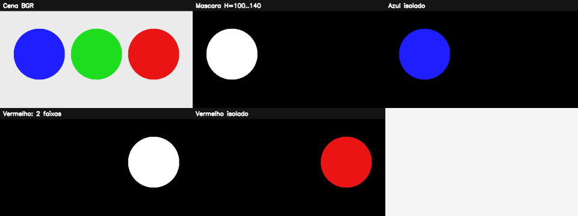

6. Espaços de cores e segmentação cromática¶
O que você aprenderá¶
Uma cor pode ser representada de diferentes maneiras. Neste capítulo, você aprenderá que mudar de espaço de cor não altera magicamente a cena: muda a forma matemática de organizar a informação, o que pode tornar certas tarefas mais simples.
Ao final, você deverá conseguir:
- diferenciar BGR/RGB, HSV e Lab;
- compreender por que BGR mistura cor e brilho;
- interpretar matiz, saturação e valor;
- conhecer a escala HSV usada pelo OpenCV;
- compreender a circularidade da matiz;
- converter imagens com
cvtColor; - inspecionar valores de pixels em diferentes espaços;
- criar máscaras por intervalo com
inRange; - combinar intervalos para cores que cruzam a origem da matiz;
- aplicar máscaras à imagem original;
- limpar máscaras com morfologia;
- calibrar limites de forma experimental;
- reconhecer limitações de segmentação por cor.
Espaços de cor são representações alternativas que podem separar componentes úteis para análise, como cromaticidade e luminosidade (GONZALEZ; WOODS, 2010; SZELISKI, 2022).
6.1 Uma mesma cor pode ser descrita de formas diferentes¶
Em BGR, cada pixel possui três valores:
Em HSV, o mesmo pixel é descrito por:
Em Lab, usamos aproximadamente:
Analogia: endereço de uma pessoa¶
Uma pessoa pode ser localizada por endereço postal, coordenadas geográficas ou referência de bairro. A pessoa é a mesma, mas cada representação facilita uma tarefa diferente.
6.2 BGR e RGB¶
O OpenCV normalmente carrega imagens coloridas em BGR.
Para converter para RGB:
Essa conversão é importante ao usar bibliotecas que esperam RGB.
6.3 Por que RGB/BGR pode ser ruim para segmentar cor?¶
Considere um objeto azul iluminado fortemente e o mesmo objeto na sombra. Os valores B, G e R mudam em conjunto com a iluminação.
Assim, uma regra direta como:
pode funcionar em uma cena e falhar em outra.
HSV reorganiza a representação para separar melhor a “família” da cor do brilho.
6.4 HSV¶
HSV significa:
- H — Hue (matiz): família da cor;
- S — Saturation (saturação): pureza da cor;
- V — Value (valor): brilho.
Analogia: tinta¶
Imagine descrever uma tinta por:
- qual é a cor principal;
- quanto ela foi diluída com cinza/branco;
- quão iluminada ela está.
Essa separação ajuda a selecionar cores mesmo quando o brilho varia moderadamente.
6.5 Escala HSV no OpenCV¶
Para imagens uint8:
O canal H representa um círculo de matizes comprimido para 0..179.
Valores aproximados:
6.6 A matiz é circular¶
O vermelho aparece perto do início e do final da escala.
Analogia: relógio¶
11h59 está muito perto de 0h01, embora os números pareçam distantes. Matiz funciona de forma circular semelhante.
Por isso, para vermelho frequentemente usamos dois intervalos.
mascara1 = cv2.inRange(
hsv,
(0, 100, 80),
(10, 255, 255)
)
mascara2 = cv2.inRange(
hsv,
(170, 100, 80),
(179, 255, 255)
)
mascara_vermelho = cv2.bitwise_or(
mascara1,
mascara2
)
6.7 Convertendo para HSV¶
Exemplo 1 — inspecionando um pixel¶
Essa prática ajuda a compreender que os números mudaram de significado.
6.8 Separando H, S e V¶
Podemos visualizar cada componente separadamente para entender o papel de cada uma.
H: identifica a família cromática;S: valores baixos indicam cores pouco saturadas;V: concentra informação de brilho.
6.9 inRange: criando uma caixa de decisão¶
O pixel fica branco somente se H, S e V estiverem simultaneamente dentro do intervalo.
Analogia: três catracas ao mesmo tempo¶
Para o pixel ser aceito:
- H precisa passar;
- S precisa passar;
- V precisa passar.
Se qualquer uma falhar, o pixel é rejeitado.
6.10 Por que usar limites mínimos de S e V?¶
Quando a saturação é muito baixa, a cor se aproxima de cinza. A matiz deixa de ser uma medida muito confiável.
Quando V é muito baixo, o pixel está quase preto e novamente a cor fica difícil de estimar.
Por isso é comum usar algo como:
em vez de aceitar qualquer S e V.
6.11 Aplicando a máscara¶
A máscara decide onde a cor original será preservada.
6.12 Limpando a máscara¶
Segmentação por cor pode produzir pontos isolados e buracos.
kernel = cv2.getStructuringElement(
cv2.MORPH_ELLIPSE,
(5, 5)
)
limpa = cv2.morphologyEx(
mascara_azul,
cv2.MORPH_OPEN,
kernel
)
limpa = cv2.morphologyEx(
limpa,
cv2.MORPH_CLOSE,
kernel
)
Isso conecta diretamente o capítulo de cores ao capítulo de morfologia.
6.13 Encontrando o maior objeto segmentado¶
contornos, _ = cv2.findContours(
limpa,
cv2.RETR_EXTERNAL,
cv2.CHAIN_APPROX_SIMPLE
)
if contornos:
maior = max(contornos, key=cv2.contourArea)
x, y, w, h = cv2.boundingRect(maior)
Agora a segmentação cromática pode alimentar um detector geométrico simples.
6.14 Espaço Lab¶
Lab separa aproximadamente:
L: luminosidade;a: eixo verde–vermelho;b: eixo azul–amarelo.
O Lab é útil em tarefas em que desejamos trabalhar com componentes cromáticas e luminosidade de forma diferente.
6.15 HSV não é invariância completa à iluminação¶
Mesmo com HSV, mudanças de iluminação podem causar:
- alteração de V;
- alteração de S;
- deslocamento de H devido a balanço de branco;
- reflexos especulares;
- saturação do sensor.
Assim, HSV facilita alguns problemas, mas não elimina física de iluminação.
6.16 Calibrando limites corretamente¶
Uma estratégia melhor que copiar números prontos:
- capture imagens representativas;
- selecione pixels do objeto;
- registre H, S e V;
- observe mínimos, máximos e percentis;
- inclua variações de iluminação;
- teste em imagens que não foram usadas para escolher limites;
- revise falsos positivos e falsos negativos.
Exemplo 2 — coletando pixels de uma ROI¶
roi = hsv[y1:y2, x1:x2]
pixels = roi.reshape(-1, 3)
print("H mínimo:", pixels[:, 0].min())
print("H máximo:", pixels[:, 0].max())
print("S mediana:", np.median(pixels[:, 1]))
print("V mediana:", np.median(pixels[:, 2]))
6.17 Segmentação por cor como classificador simples¶
Podemos interpretar inRange como um classificador baseado em regras:
Isso funciona bem quando a cor realmente separa as classes.
Falha quando:
- objeto e fundo têm cores semelhantes;
- a iluminação varia demais;
- reflexos mudam a aparência;
- o objeto possui várias cores.
Nesses casos, combine cor com:
- forma;
- textura;
- movimento;
- características locais;
- redes neurais.
6.18 Exemplo integrado do capítulo¶
O código do capítulo 6 cria objetos de várias cores e mostra como segmentá-los.
Pipeline:
imagem BGR
↓
HSV e Lab
↓
separação de canais
↓
faixa azul
↓
duas faixas vermelhas
↓
OR das faixas
↓
limpeza morfológica
↓
aplicação da máscara
↓
contorno do maior objeto

6.19 Erros comuns¶
| Sintoma | Causa provável | Correção |
|---|---|---|
| vermelho não é detectado | faixa cruza 0/179 | use dois intervalos |
| muitos cinzas são aceitos | S mínimo baixo | aumente limite de saturação |
| sombras viram fundo | V mínimo alto | calibre brilho |
| resultado muda em outra câmera | balanço de branco/exposição | recalibre |
| azul/vermelho trocados | BGR/RGB confundidos | confira conversão |
| máscara possui pontos | ruído | abertura/fechamento |
| objeto e fundo se misturam | cor não separa classes | acrescente outras características |
6.20 Perguntas de revisão¶
- O que muda quando convertemos BGR para HSV?
- O que representa H?
- O que representa S?
- O que representa V?
- Por que H vai de 0 a 179 no OpenCV
uint8? - Por que vermelho exige frequentemente dois intervalos?
- Como funciona
inRange? - Por que excluir saturações muito baixas?
- HSV resolve completamente mudanças de iluminação?
- Quando Lab pode ser interessante?
Exercícios de fixação¶
Exercício 1¶
Crie uma imagem com blocos BGR vermelho, verde, azul, amarelo e branco. Converta para HSV e imprima o valor central de cada bloco.
Exercício 2¶
Separe e salve H, S e V individualmente.
Exercício 3¶
Crie uma máscara para azul usando inRange.
Exercício 4¶
Crie uma máscara para vermelho usando apenas 0..10 e observe o que é perdido. Depois adicione 170..179.
Exercício 5¶
Adicione regiões cinza e teste como diferentes valores mínimos de S afetam falsos positivos.
Exercício 6¶
Crie uma sombra sintética reduzindo V numa parte do objeto e teste a robustez da faixa.
Exercício 7¶
Use abertura e fechamento na máscara e compare a quantidade de componentes.
Exercício 8¶
Encontre o maior objeto azul e desenhe sua bounding box.
Exercício 9¶
Calcule o centroide do maior objeto segmentado.
Exercício 10¶
Compare a separação entre objeto e fundo usando HSV e Lab.
Exercício 11¶
Implemente um programa que permita clicar em pixels e mostre seus valores BGR e HSV.
Exercício 12¶
Colete valores HSV de uma ROI e calcule percentis 5 e 95 para cada canal.
Exercício 13¶
Explique por que copiar limites HSV de um tutorial da internet pode falhar em sua câmera.
Síntese¶
Espaços de cor reorganizam informação. HSV torna explícitas matiz, saturação e brilho, o que facilita regras de segmentação cromática, mas não elimina problemas de iluminação. Uma boa segmentação por cor depende de calibração, validação em condições reais e integração com outras pistas quando a cor isolada não é suficiente.
Referências¶
GONZALEZ, Rafael C.; WOODS, Richard E. Processamento Digital de Imagens. 3. ed. São Paulo: Pearson, 2010.
SZELISKI, Richard. Computer Vision: Algorithms and Applications. 2. ed. Cham: Springer, 2022.